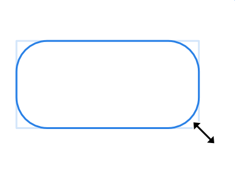
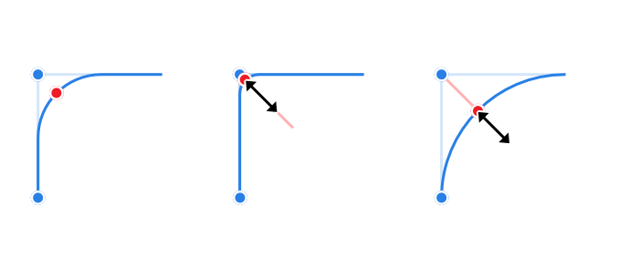
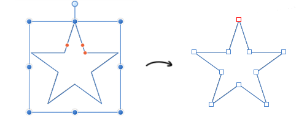

To draw a new shape:
- Choose one of the shape tools, e.g., Rounded Rectangle from the Tools panel.
- Drag on the page to create the shape and use the modifier to constrain the shape's proportions if needed.
 - Modify options as required, either by changing the values on the context toolbar or by dragging the red handle(s) (if available).

To reset a shape handle to its initial position:
- Double-click the red handle that has been previously moved. Any other repositioned handles on the shape will not be affected.
 To edit an existing shape:
To edit an existing shape:
- Click the Node Tool.
- Select the shape, either by clicking the shape or by clicking the layer entry in the Layers panel.
- Edit the shape as required by either by directly dragging the red handle(s), or by changing the values on the context toolbar.
 To convert a shape to curves:
To convert a shape to curves:
- Click Convert to Curves, found in either the Layer menu or on the context toolbar.

The shape is now made from curves and the Node Tool is automatically selected. Segments and nodes can be modified with the Node Tool.